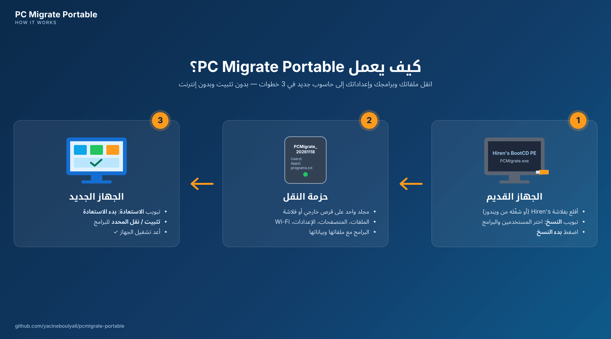
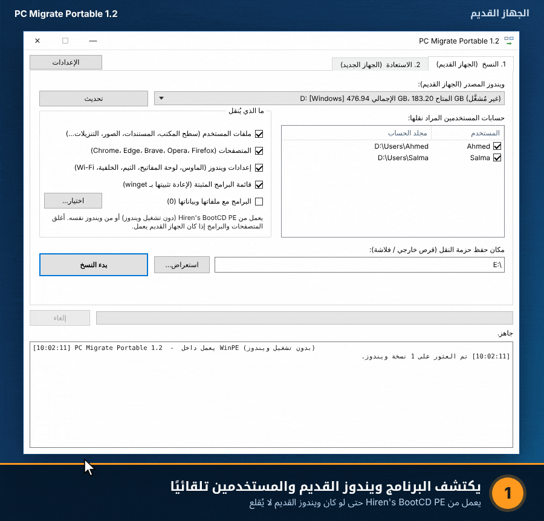
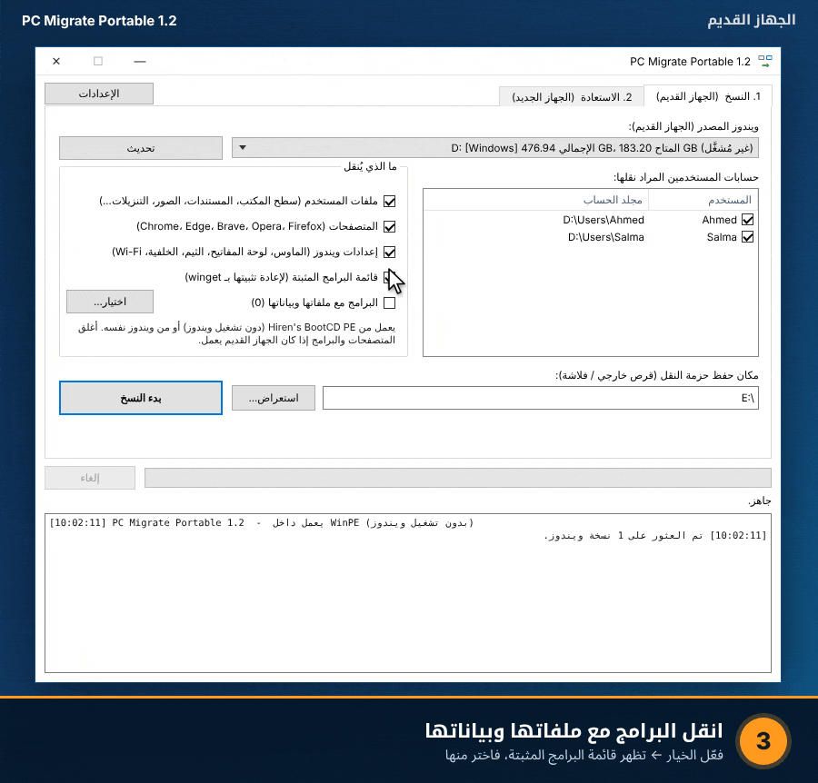
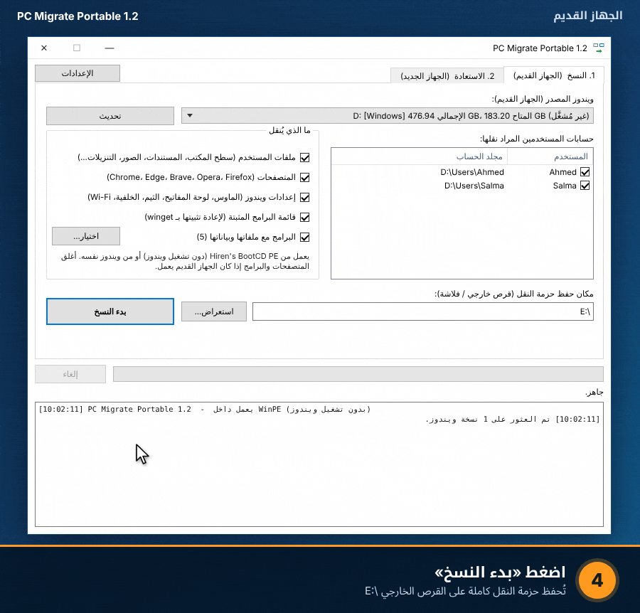
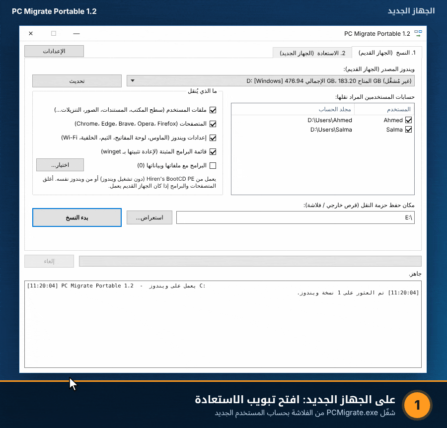
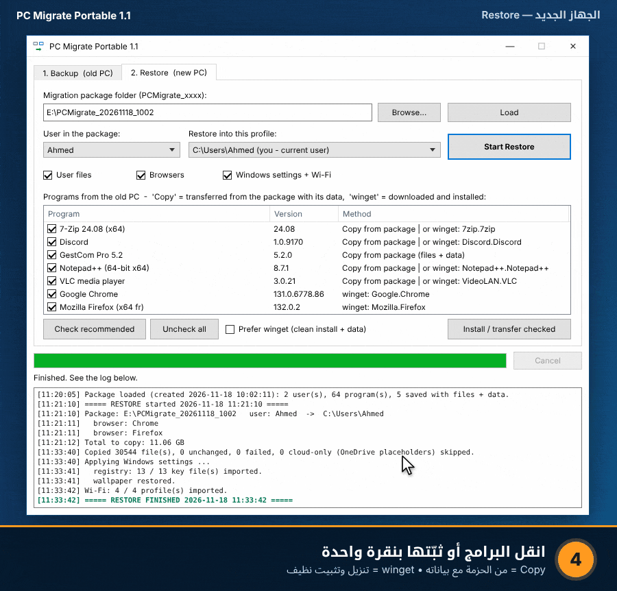

انقل حاسوبك القديم إلى الجديد
بنقرات قليلة
أداة مجانية ومحمولة تنقل الملفات والمتصفحات وإعدادات ويندوز والبرامج المثبتة مع بياناتها — وتعمل حتى من فلاشة Hiren's BootCD PE.
⚠️ البرنامج غير موقّع رقميًا، فقد يظهر تحذير SmartScreen: اضغط More info ثم Run anyway.
كيف يعمل؟
ثلاث خطوات: انسخ من الجهاز القديم، احمل الحزمة على قرص خارجي، واستعدها على الجهاز الجديد.

شاهد طريقة العمل خطوة بخطوة
صور متحركة تعرض كل مرحلة من مراحل النقل.
يكتشف ويندوز القديم والمستخدمين
شغّل البرنامج على الجهاز القديم (من Hiren's أو من ويندوز). يكتشف أقراص ويندوز والمستخدمين تلقائيًا، فتحدد ما تريد نقله.
- الملفات: سطح المكتب، المستندات، الصور...
- المتصفحات: Chrome و Edge و Firefox...
- إعدادات ويندوز و Wi-Fi

اختر البرامج التي تُنقل مع بياناتها
فعّل خيار Programs with their files & data، فتظهر قائمة البرامج المثبتة مع حجمها ومكان تثبيتها. حدّد ما تريد، ثم OK.
- ملفات البرنامج والسجلّ (Registry) والخدمات
- الاختصارات وبيانات كل مستخدم

ابدأ النسخ إلى القرص الخارجي
اضغط Start Backup. يظهر التقدم والسجل لحظة بلحظة، وفي النهاية يكون مجلد PCMigrate_التاريخ جاهزًا على القرص.

استعد الملفات والإعدادات على الجهاز الجديد
افتح تبويب Restore: يعثر البرنامج على الحزمة تلقائيًا. اختر المستخدم، ثم Start Restore. الملفات الأحدث على الجهاز الجديد لا تُستبدل.
Restore · new PC
انقل البرامج أو ثبّتها بنقرة واحدة
اضغط Install / transfer checked:
- Copy from package: يُنقل البرنامج من الحزمة مع بياناته، بدون إنترنت
- winget: يُنزَّل ويُثبَّت نظيفًا من الإنترنت
- ثم أعد تشغيل الجهاز ✓

شرح كل الأزرار
كل زر عليه رقم، وشرحه بجانبه. اضغط على الصورة لتكبيرها.
حدود يجب معرفتها
كلمات المرور في Chrome و Edge مشفّرة بمفتاح خاص بالجهاز، فاستعمل المزامنة (Sync). أما Firefox فينتقل بالكامل.
برامج الحماية و VPN والتعريفات، وتراخيص Office و Adobe تحتاج غالبًا إعادة تثبيت.
تُنقل كلمات المرور كاملة إذا أُخذت النسخة من ويندوز وهو يعمل. أما من Hiren's فتنتقل أسماء الشبكات فقط.
زر الإعدادات أعلى النافذة: English و Français و العربية و Español، وتتغيّر الواجهة فورًا.
جرّب البرنامج أولًا على جهاز وهمي (VM)، واستعمل قرصًا بصيغة NTFS أو exFAT.